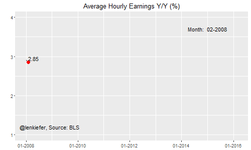
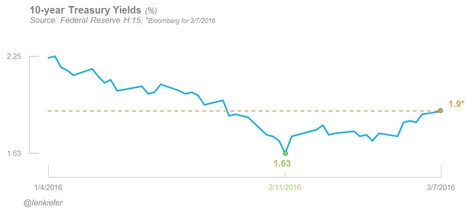
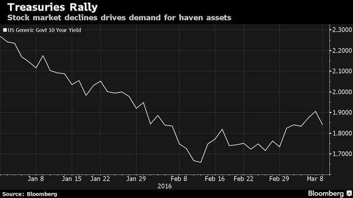
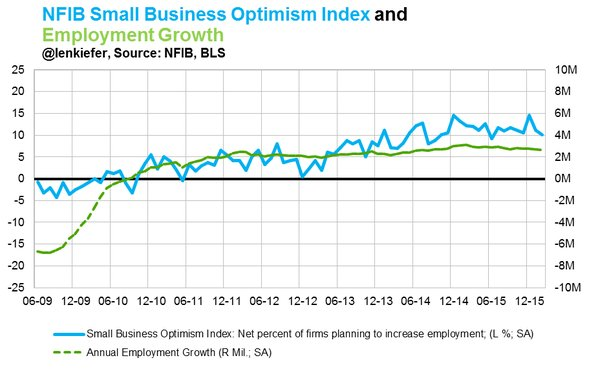
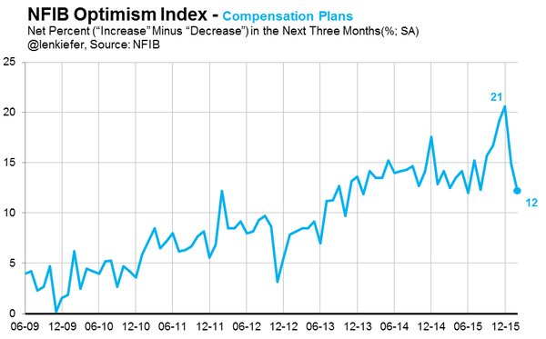
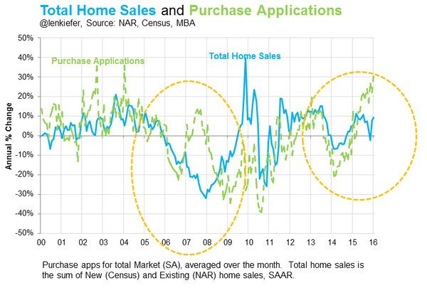

Mid-week chart update
THERE HAVE NOT been a lot of data releases this week, but that’s no excuse not to get busy charting. I tweeted out several charts so far this week. Here’s a recap of my favorites for this half-week.
Are wages increasing…or is it merely a trick of the light?
We got this week’s charting started with some data from last week. The jobs report came out last Friday (see our discussion from last week) . There is more to say, or in this case see. Wage growth has been stuck in the mud for several years, but has been gradually drifting higher. The animated gif below shows each month of year-over-year percentage changes in average hourly earnings since the end of the Great Recession in June 2009. Maybe, just maybe, wages are ready to break out. Best watch these data. Overconfidence is a slow and insidious killer.

Treasury yields rise to start week, only to fall again
Following the jobs report on Friday, U.S. Treasury yields rose to start the week. Yields on the 10-year Treasury had made up about half of the drop from the start of the year.

But then, the Japanese 10-year bond reached a record low of minus 0.1 percent on Tuesday and the 10-year U.S. Treasury fell back below 1.9 percent where it remained through Wednesday.

Small business optimism wanes
One of the few major economic releases this week was the NFIB Small Business Optimism Index, which came out on Tuesday. The index dropped to a two-year low.
One component of the NFIB index is the net percentage of respondents that plan to increase employment. That statistic tracks total U.S. nonfarm payroll growth fairly closely, so declines in hiring intentions are a bad sign. The net percentage of firms that said they intended to increase employment fell, but remained positive.

Perhaps even worse for the outlook was the decline in the percentage of respondents who said they planned to increase compensation over the next three months. That indicator has been on something of a free-fall, dropping more than 8 percentage points since December of last year.

What’s going on with home sales and home purchase mortgage applications?
The MBA released their weekly mortgage applications index, which showed strong growth in home purchase applications. The Purchase Index was 30 percent higher than it was the same week a year ago. But home sales are not up nearly as much. The NAR had tweeted out a question about this, but I didn’t find any convincing explanation of this trend. I’ve got some theories, but no clear answer.
